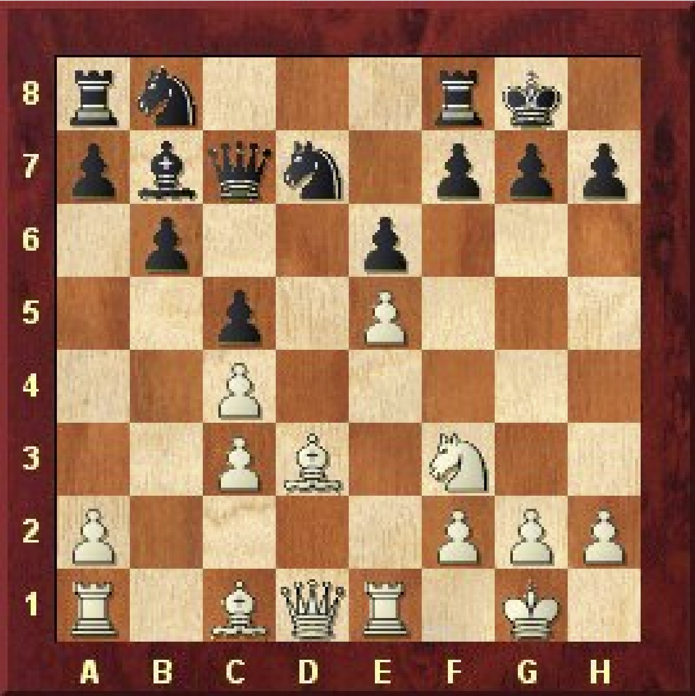
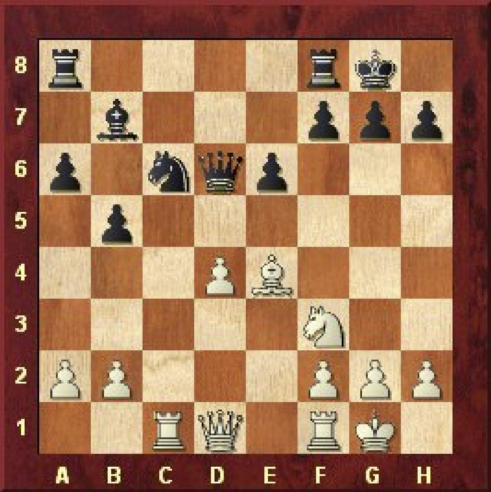
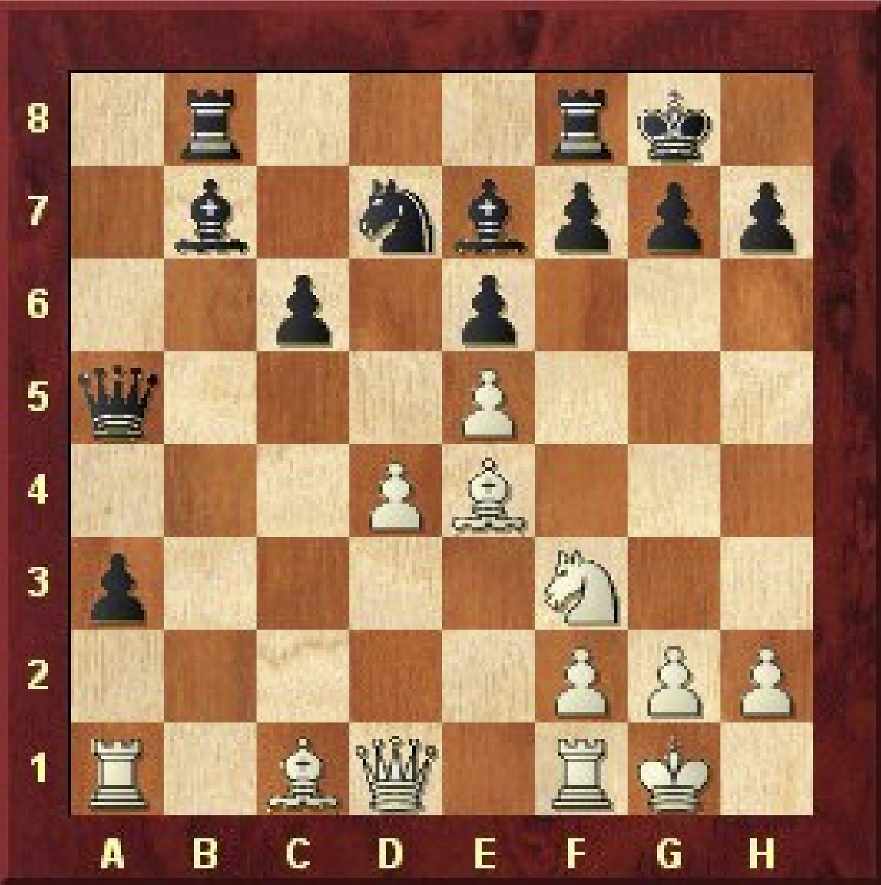
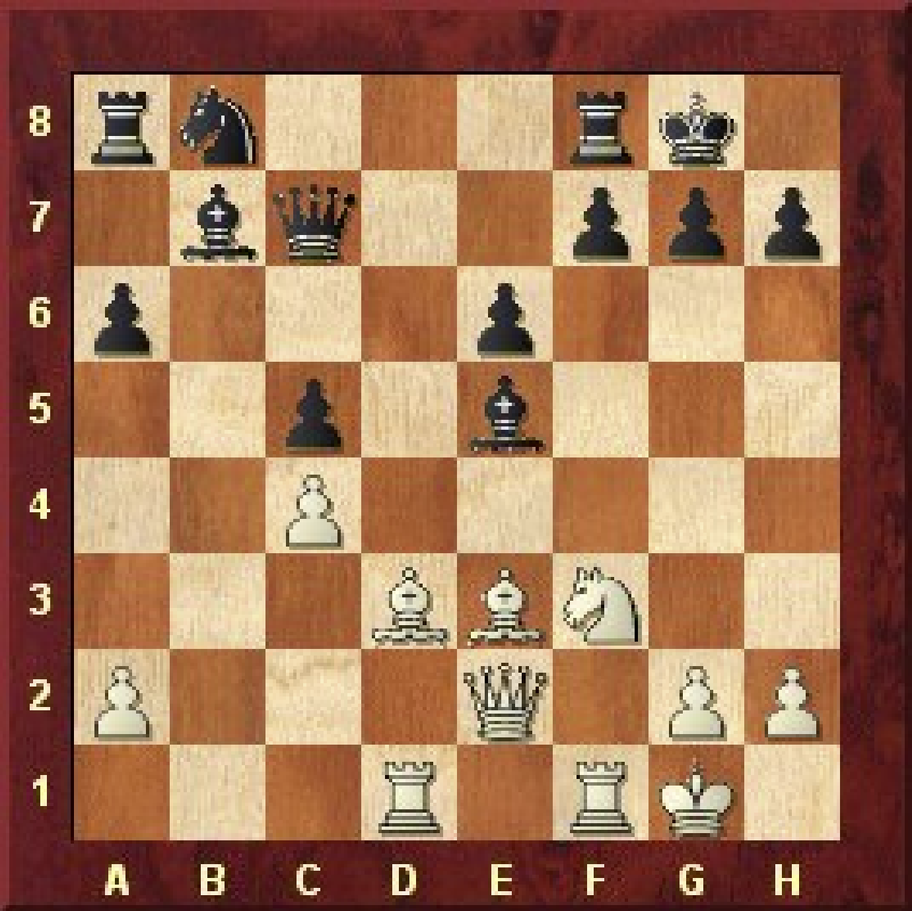
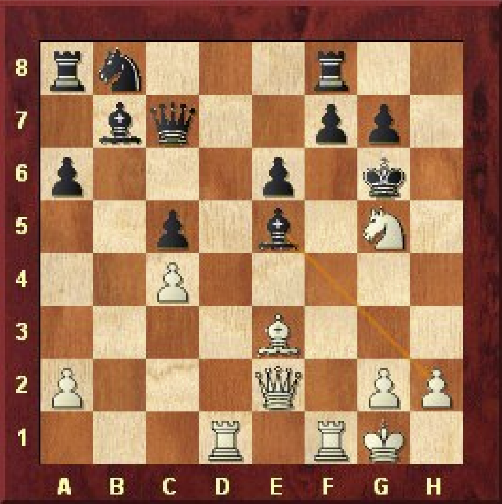
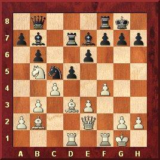
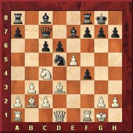
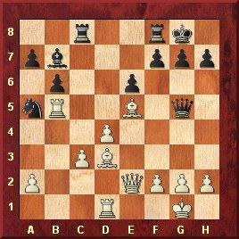
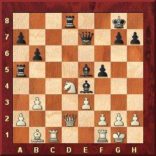

Haifa ol (Women) fin-C Haifa (2), 1976
1) Παίζουν τα λευκά
Montreal-A 5th Montreal (3), 2004
3) Παίζουν τα λευκά
Staunton mem Groningen (3), 1946
2) Παίζουν τα λευκά
Kfar Sava GP Kfar Sava (3), 19.12.1997
4) Παίζουν τα λευκά
Haifa ol (Women) fin-C Haifa (2), 1976
Χάνουν και οι συνέχειες 14...Kh6 15.Nxe6++-; 14...Kg6 15.Qd3+ f5 16.exf6+ Be4 17.Qxe4+ Kh5 18.Qh7+ Kg4 19.Qh3 ματ.
Σε φορσέ ματ οδηγεί η συνέχεια 17.Qh5+ Kg8 18.Qh7+ Kf8 19.Qh8+ Ke7 20.Qxg7+ Kd8
21.Qg8+ Nf8 22.Qxf8+ Kd7 23.Qf7+ Kc6 24.Qxe6+ Qd6 25.Qxd6 ματ.
Staunton mem Groningen (3), 1946
Σε αυτή τη θέση η θυσία είναι λάθος αλλά ακόμα και ο πρώην παγκόσμιος πρωταθλητής Euwe δεν άντεξε στον πειρασμό.
Καλύτερη ήταν η συνέχεια 15.Ne5 Rac8 16.Qd3 h6 17.Qe3 με μικρή υπεροχή για τα λευκά] 15...Kxh7 16.Ng5+ Kg6
[16...Kg8?? 17.Qh5 Rfc8 18.Qxf7+ Kh8 19.Rc3+-.
Επρεπε 20...Kf6 21.Rg3 Ke7–+.
Τα μαύρα δεν αντέχουν στην πίεση και κάνουν 2ο συνεχόμενο λάθος. Έπρεπε 21...Kh7! 22.Nxb7 Nxb7 23.Qc6 Nd6
24.Qd7 Qxd4 25.Rh3+ Kg6 26.Rg3+ Kh7 27.Rh3+ και ισοπαλία με διαρκές σαχ.
22...Nxb7? 23.Qc6+-.
24.Nxe6 Rxe6 25.d5+-.
24...Nxd4 25.Qd1 Qd6 26.f4 Rh8 27.Ne5+ Kg8 28.Rd3 Rd8 29.Kh1 Qb6 30.Nf3 Nc6
31.Rd7 Rxd7?[31...Qb8 32.Ng5 Qc8 33.Rd6±] 32.Qxd7 Nd8 33.Qe8+ Kh7 34.Ng5+
Montreal-A 5th Montreal (3), 2004
Λάθος που επιτρέπει τη θυσία Έπρεπε 18...Qd8 19.Bxe7 Qxe7 20.Ra7± ½–½ Milov,V-Hansen,C Essen 2000.
Χάνουν και οι άλλες απαντήσεις 20...Kg8 21.Qh5 Nf6 22.exf6 Qf5 23.Rxa3+-; 20...Kh6
21.Qd3 Kxg5 22.Rxa3 Qb6 23.f4+ Kh6 24.Qh3+ Kg6 25.Rg3 ματ.
21...Kxg5 22.f4+ Kh6 23.Qh3+ Kg6 24.f5+ exf5 25.Rf3 f6 26.Rxf5 Rh8 27.Qg4+ Kf7 28.e6++-.
23...Bc8 24.Rb3 Nxe5 25.Nxf8+ Kf7 26.Rbxa3 Nxd3 27.Rxa5 Rxa5 28.Rxa5+-.
27...Kc7 28.Ne6#.
30.Rxa3 Rxa3 31.Qe6+ Kc7 32.Qf7+ Kc8 33.Qf5+ Kc7 34.Ne6++-.
Kfar Sava GP Kfar Sava (3), 19.12.1997
23...Kg8 24.Qh5 Be4 25.Nxe4 g6 26.Qh4+-.
24.Qg4?? Bxh2+ 25.Kh1 Qg3–+; 24.Qc2+ f5 25.Nxe6 Qc8 26.Nxf8+ Qxf8
27.g4 Be4 (27...Bd4 28.Rxf5 Bxe3+ 29.Kf1+) 28.Qxe4!+-.
Duras 60 mem Prague (8), 1942
1. Παίζουν τα λευκά
Cesenatico op Cesenatico (5), 2007
2.Παίζουν τα λευκά
Portoroz Interzonal Portoroz (13), 1958
3.Παίζουν τα λευκά
Aker Brygge Aker Brygge (4), 1989
4.Παίζουν τα μαύρα
Duras 60 mem Prague (8), 1942
Έχανε και η αποδοχή της θυσίας 19...Kxg7 20.Qg4+ Kh8 21.Rf3 f5 22.Rh3+ Bh4 23.Qxh4+ Kg8 24.Qh8+ Kf7
25.Rh7+ Ke8 (25...Kg6 26.Rh6+ Kf7 27.Rf6+ Ke7 28.Qg7+ Ke8 29.Rxf8 ματ) 26.Qxf8+ Kxf8 27.Rh8+ Kg7 28.Rxb8+-.
Portoroz Interzonal Portoroz (13), 1958
Σημαντική κίνηση με διπλό σκοπό: απομακρύνει τη βασίλισσα και δημιουργεί τη δυνατότητα να περάσει ο πύργος από την τρίτη γραμμή.
21...Qh4 22.Bxg7 Kxg7 23.Rh5.
24...Kxg7 25.Qg4+ Kh7 (25...Kf6 26.Qg5 ματ) 26.Rh5 ματ.
Κέρδιζε η βαριάντα 25.Bxf8 Rxf8 (25...Kxf8 26.Rε1+-) 26.Qg6+ Kh8 27.Rd3 Rf7 28.Rh3+ Rh7 29.Rxh7+ Qxh7 30.Qxe6+-.
Λάθος που χάνει αμέσως. Έπρεπε 25...Qh7 26.Qg5+ Kf7 27.Qf6+ Ke8 28.Qxe6+ Qe7 29.Qh6 Rxc3 30.d5 Rc2 με περίπλοκη θέση.
Cesenatico op Cesenatico (5), 2007
Ο λευκός αποφασίζει να περιπλέξει τη θέση κάνοντας τη θυσία χωρίς να είναι εμφανές το τελικό της αποτέλεσμα.
Η ήρεμη συνέχεια είναι 15.Nxd6 Qxd6 16.Qh5 h6 17.Rad1 με μικρή υπεροχή.
Λάθος θυσία. Έπρεπε να διαλέξει μια από τις συνέχειες 22.Re2 Rd8 23.Rfe1 ή
22.c3 Rd8 23.Qh5+ Bg6 24.Qf3 με περιπλοκές και στις δύο βαριάντες.
Aker Brygge (4), 1989
Ο Tal γνωστός για το επιθετικό του στυλ δεν μπορεί να αντισταθεί στον πειρασμό της διπλής θυσίας που όπως θα δούμε είναι ριψοκίνδυνη.
Η συνέχεια 28...Bxb1 29.Rxb1 Qd6 30.h3 Bxd4 31.exd4 Qxd4 32.Qxd4 Rxd4 33.Rb2 Rad5 οδηγεί σε ισότητα.
31.Kxg2 Qg4+ 32.Kh2 Rd6 33.Rc8+ Kf7 34.Rc7+ Ke8 35.Rc6 οδηγεί σε ισοπαλία.
Ο λευκός κατάφερε να βρει καταφύγιο για το βασιλιά του στην άλλη πλευρά της σκακιέρας και αποκτά μικρό πλεονέκτημα.